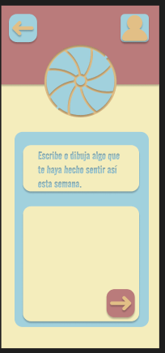
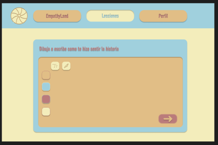
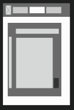
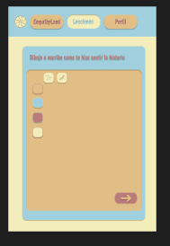

Casos Prácticos
Diseño de Aplicación

Diseño Web

Prototipo Alta Fidelidad Tablet


Explora mis proyectos de diseño
Soy un diseñador que se apasiona por crear experiencias digitales centradas en el usuario, fusionando empatía, simplicidad y creatividad. Mi trabajo se destaca por ofrecer soluciones funcionales y emocionalmente resonantes que hacen que los usuarios se conecten con la tecnología de una manera accesible y significativa.